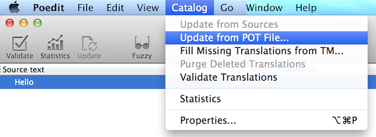

I18n¶
GNU gettext を使用します。gettextは他の国際化方法と異なり、複数形をサポートしています。

ソースコード内への国際化メッセージの記載¶
xitrum.Action は xitrum.I18n を継承しており以下の2つのメソッドを持ちます:
t("Message")
tc("Context", "Message")
t("Hello %s").format("World")
// 1$ and 2$ are placeholders
t("%1$s says hello to %2$s, then %2$s says hello back to %1$s").format("Bill", "Hillary")
// {0} and {1} are placeholders
java.text.MessageFormat.format(t("{0} says hello to {1}, then {1} says hello back to {0}"), "Bill", "Hillary")
t("%,.3f").format(1234.5678) // => 1,234.568
t("%,.3f").formatLocal(java.util.Locale.FRENCH, 1234.5678) // => 1 234,568
// Above, you explicitly specify locale.
// If you want to implicitly use locale of the current action:
// when English => 1,234.568, when French => 1 234,568
t("%,.3f", 1234.5678)
actionの中では、それらのメソッドを直接呼び出すことができます。
modelのようにaction以外の場所では、xitrum.I18n オブジェクトをインポートし、 t または tc メソッドを呼び出します:
// In an action
respondText(MyModel.hello(this))
// In the model
import xitrum.I18n
object MyModel {
def hello(i18n: I18n) = i18n.t("Hello World")
}
potファイルへのメッセージの展開¶
空のi18n.potファイルをプロジェクトのルートディレクトリに作成し、 プロジェクト全体を再コンパイルします。
sbt/sbt clean
rm i18n.pot
touch i18n.pot
sbt/sbt compile
sbt/sbt clean で全ての.classファイルを削除し、SBTにプロジェクト全体の再コンパイルを実施します。
sbt/sbt clean の後、SBTはコンパイル時に全ての 依存ライブラリ を再ダウンロードを行いますので、
より時間を節約するには find target -name *.class -delete と実施することで
同じように target ディレクトリ内の.classファイルを削除することができます。
リコンパイル実施後、ソースコードから抽出されたメッセージがi18n.potファイルにgettext形式で出力されます。 この魔法のような動作は Scala compiler plugin technique により実現されています。
ただし一つ注意点があります。このメソッドはScalaのコードからのみメッセージを抽出します。
もしプロジェクト内にJavaファイルがある場合、 xgettext コマンドを使用してメッセージを抽出します:
xgettext -kt -ktc:1c,2 -ktn:1,2 -ktcn:1c,2,3 -o i18n_java.pot --from-code=UTF-8 $(find src/main/java -name "*.java")
出力されたi18n_java.potはi18n.potにマージする必要があります。
po ファイルの保存先¶
i18n.potはテンプレートであるため、各言語に対応させるにはi18n.potファイルをコピーして、<language>.po として保存し翻訳を開始します。
Xitrumはクラスパス中の i18n という名前のディレクトリを監視します。
もしそのディレクトリ内の <language>.po ファイルに変更があった場合
Xitrumは自動的に <language>.po ファイルをリロードします。
src
main
scala
view
resources
i18n
ja.po
vi.po
...
poファイルを編集やマージには Poedit のようなツールを使用することができます。
poファイルは複数のJARに含めることができ、Xitrumはそれらを自動的にマージします。
mylib.jar
i18n
ja.po
vi.po
...
another.jar
i18n
ja.po
vi.po
...
言語の設定¶
ブラウザからのリクエストに含まれる
Accept-Languageリクエストヘッダーを取得するには、browserLanguagesを実行します。結果はブラウザによって送信された優先順位の高い順にソートされて取得できます。デフォルト値は "en" です。現在の言語を日本語に変更するには、
language = "ja"と実行します。適切な言語を言語リソースから自動でセットするには
autosetLanguage(availableLanguages)を実行します。availableLanguagesはresources/i18nディレクトリーとJARファイル内に含まれる言語リソースのリストを指定します。 もし指定された言語リソースが存在しない場合、言語設定は"en"が使用されます。設定された言語を確認するには、
language変数にセットされた値を参照します。
一般的にアクションではビフォアフィルターにおいて言語を設定します:
beforeFilter {
val lango: Option[String] = yourMethodToGetUserPreferenceLanguageInSession()
lango match {
case None => autosetLanguage(Locale.forLanguageTag("ja"), Locale.forLanguageTag("vi"))
case Some(lang) => language = lang
}
}
バリデーションメッセージ¶
jQuery Validation プラグインは i18n error messages を提供しています。 Xitrumは現在の言語に対応するメッセージファイルを自動的にインポートします。
xitrum.validator パッケージが提供するサーバサイドバリデーションにおいても、
Xitrumはそれらの翻訳を提供しています。
複数形への対応¶
tn("Message", "Plural form", n)
tcn("Context", "Message", "Plural form", n)
Xitrumは以下の仕様に沿って複数形の単語を翻訳します。
複数形の単語は以下のいずれかの書式に従う必要があります:
nplurals=1; plural=0
nplurals=2; plural=n != 1
nplurals=2; plural=n>1
nplurals=3; plural=n%10==1 && n%100!=11 ? 0 : n != 0 ? 1 : 2
nplurals=3; plural=n==1 ? 0 : n==2 ? 1 : 2
nplurals=3; plural=n==1 ? 0 : (n==0 || (n%100 > 0 && n%100 < 20)) ? 1 : 2
nplurals=3; plural=n%10==1 && n%100!=11 ? 0 : n%10>=2 && (n%100<10 || n%100>=20) ? 1 : 2
nplurals=3; plural=n%10==1 && n%100!=11 ? 0 : n%10>=2 && n%10<=4 && (n%100<10 || n%100>=20) ? 1 : 2
nplurals=3; plural=(n==1) ? 0 : (n>=2 && n<=4) ? 1 : 2
nplurals=3; plural=n==1 ? 0 : n%10>=2 && n%10<=4 && (n%100<10 || n%100>=20) ? 1 : 2
nplurals=4; plural=n%100==1 ? 0 : n%100==2 ? 1 : n%100==3 || n%100==4 ? 2 : 3
日付と数値のフォーマット¶
もしScalateテンプレートエンジンを使用している場合、日付と数値のフォーマットは現在のアクションの言語設定に従うことになります。
異なるフォーマットを使用する場合:
import java.text.{DateFormat, NumberFormat}
val myDateFormat = ...
val myNumberFormat = ...
val options = Map("date" -> myDateFormat, "number" -> myNumberFormat)
respondView(options)